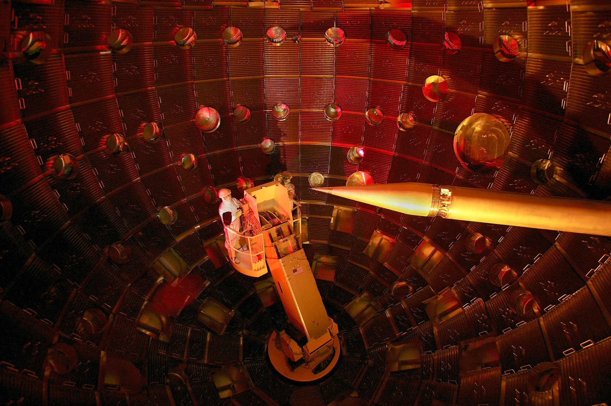

|  |
The Fusion Energy Project The fusion energy project is founded upon the achievment of 'ignition' at Lawrence Livermore National Labs (LLNL). This achievment marked a huge milestone in the quest towards clean and renewable energy and used a very differnt technique than in the past. Previous attempts at achieving ignition used variations of a toroidal structure made of superconducting magnets which aimed to accelerate particles to high speeds and force collisions that would See More... |
|
Vacuum System See More... |
|
| Mechanical Designs See More... |
this is hidden